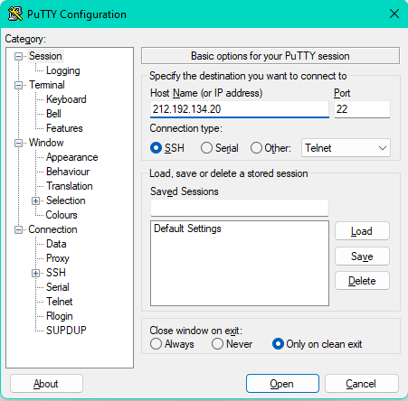
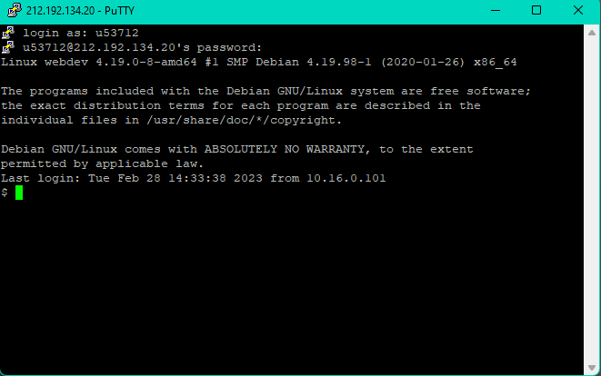
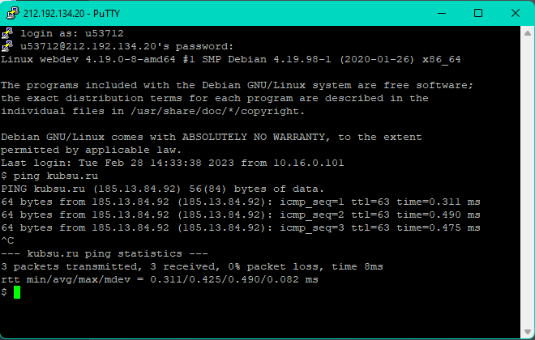
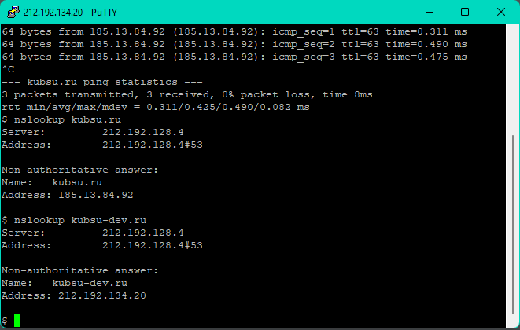
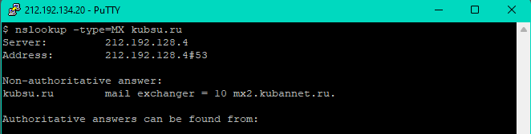
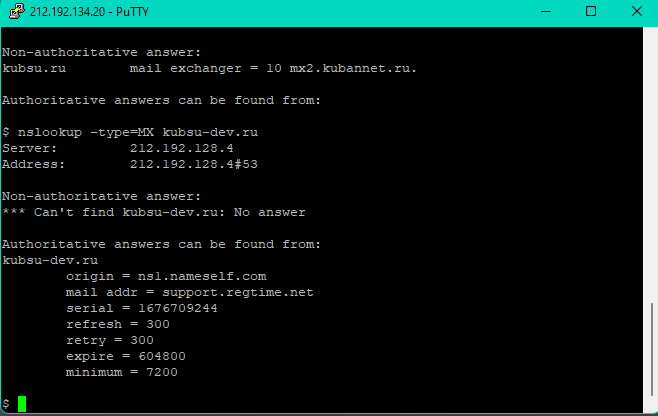
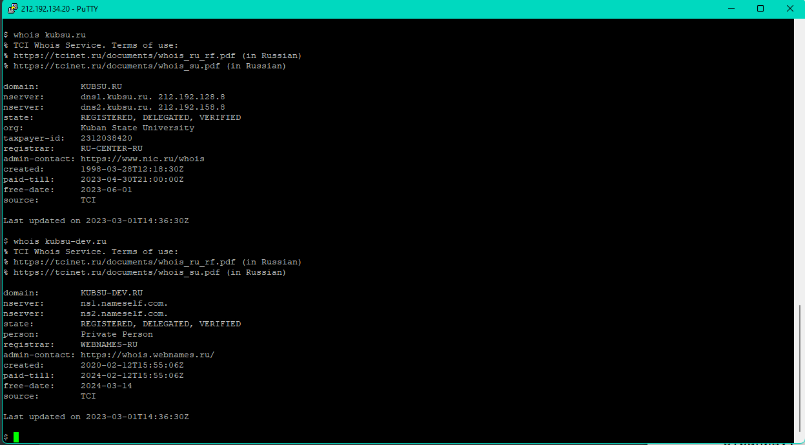

1. Открытие клиента Putty и подключение к учебному серверу по протоколу SSH используя свой логин и пароль.
 2.Используем команду ping для того, чтобы узнать IP адрес домена kubsu.ru. Команда ping используется для диагностики сети и отображения отправленных/потерянных пакетов. Для остановки работы команды ping используется сочетание клавиш CTRL+C.
3.С помощью команды nslookup узнаем A-записи и MX-записи домена kubsu.ru и kubsu-dev.ru. Для просмотра A-записей используем nslookup имя_домена, для просмотра MX-Записей nslookup -type=MX имя_домена
  4. С помощью команды whois узнаем дату регистрации домена kubsu.ru и kubsudev.ru Команда whois позволяет быстро получить всю информацию о регистрации домена, например, дату регистрации и возраст домена.
Клонирование репозитория Git с помощью SSH.